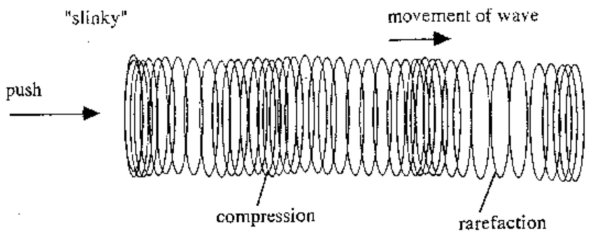

# Acoustics for Speech ### Will Styler - LIGN 6 --- # “Noise” --- # /nɔɪz/ --- ### ... but that's not what speech actually is --- <img width="70%" src="phonmedia/noisewaveform.png"> <audio controls> <source src="phonmedia/noise.wav" type="audio/wav"> </audio> --- ### Speech is acoustic - It's all sound - We're using speech gestures to produce an acoustic signal - Gestures without sound are unhelpful - Communication works fine on the phone --- ### Today's Plan - What is sound? - What are the important properties of sound? - How can we visualize them? --- # Yay! Acoustics!! --- ## Acoustics The study of waves --- --- --- <img class="r-stretch" src="phonmedia/tuningfork.jpg"> --- ## What is Sound? --- <img class="r-stretch" src="phonmedia/sound_diagram.jpg"> ---  --- ### Sound is compression and rarefaction in a medium - Sound needs something to travel in (like air or water) --- ### (Yes, your childhood is a lie) <img class="r-stretch" src="humorimg/star_wars_battle.jpg"> --- ### Thinking of sound as waves is helpful - How do speakers work? - Why does clapping cause a sound, but waving your hand through the air doesn’t? - Why are gunshots loud? --- ### We're good at hearing sound - ... but we need to visualize it --- ### Visualizing Sound - Waveforms - Spectra - Spectrograms --- ## Waveform A horizontal cut through the wave showing the peaks and troughs over time - The height/strength of the wave is called its "amplitude" <img class="r-stretch" src="phonmedia/sound_diagram.jpg"> --- <img width="70%" src="phonmedia/noisewaveform.png"> <audio controls> <source src="phonmedia/noise.wav" type="audio/wav"> </audio> --- ### Let's look at the sounds in this room right now --- ### Waveforms are well and good - ... and you can tell a lot from a waveform --- <img class="r-stretch" src="phonmedia/waveform_patpadbadspat.jpg"> --- <img width="70%" src="phonmedia/noisewaveform.png"> --- ### ... but we'll want better information to process speech --- ## Frequency The speed with which a wave oscillates - Measured in Hertz (Hz), Cycles per second <img class="r-stretch" src="phonmedia/sound_diagram.jpg"> --- ### Sound W - 100 Hz - Waveform <img class="r-stretch" src="phonmedia/soundw.jpg"> <audio controls src="phonmedia/soundw.wav"></audio> --- ### 200Hz - Waveform <img class="r-stretch" src="phonmedia/200Hz.jpg"> <audio controls src="phonmedia/200Hz.wav"></audio> --- ### Sound T - 500 Hz - Waveform <audio controls src="phonmedia/soundt.wav"></audio> --- ### Sound F - 1000 Hz - Waveform <img class="r-stretch" src="phonmedia/soundf.jpg"> <audio controls src="phonmedia/soundf.wav"></audio> --- ### Frequency is important - Different phenomena produce sounds at different frequencies - Most things produce sounds with a mix of different frequencies, each at different amplitudes - Speech has *many* components at different frequencies --- ### Voice Pitch - Changing the "fundamental frequency" (f0) of your voice changes the perceived "pitch" of your voice - Higher frequency of laryngeal vibration == "higher pitch" - *Intonation is all about this fundamental frequency!* --- ### How can we visualize the frequencies which make up a more complex sound? --- ## Spectral Slice Using a Mathematical Process called a Fourier Transform which breaks a signal down into its component frequencies at a certain time - This creates a "spectral slice" or "FFT" ('Fast Fourier Transform') or "Power Spectrum" --- ## FFT from the middle of "Noise" <img class="r-stretch" src="phonmedia/noisefft.jpg"> --- ### Fourier Transforms show us the component frequencies - This is *much* better information for analyzing speech - So, we're going to use them all the time here --- ### Let's walk through this process in more detail --- ### Sound W - 100 Hz - Waveform <img class="r-stretch" src="phonmedia/soundw.jpg"> <audio controls src="phonmedia/soundw.wav"></audio> --- ### Sound W - 100 Hz - Spectrum <img class="r-stretch" src="phonmedia/soundw_spectrum.jpg"> <audio controls src="phonmedia/soundw.wav"></audio> --- ### Sound T - 500 Hz - Waveform <audio controls src="phonmedia/soundt.wav"></audio> --- ### Sound T - 500 Hz - Spectrum <img class="r-stretch" src="phonmedia/soundt_spectrum.jpg"> <audio controls src="phonmedia/soundt.wav"></audio> --- ### Sound F - 1000 Hz - Waveform <img class="r-stretch" src="phonmedia/soundf.jpg"> <audio controls src="phonmedia/soundf.wav"></audio> --- ### Sound F - 1000 Hz - Spectrum <audio controls src="phonmedia/soundf.wav"></audio> --- ### What if we were to play these all at once? --- ### Sound WTF - Waveform <img class="r-stretch" src="phonmedia/soundwtf.jpg"> <audio controls src="phonmedia/soundwtf.wav"></audio> --- ### Sound WTF - Spectrum <img class="r-stretch" src="phonmedia/soundwtf_spectrum.jpg"> <audio controls src="phonmedia/soundwtf.wav"></audio> --- ### That's much easier to cope with! --- ### Let's see how it works in the real world --- ### ... but what about time? - Spectra only show one 'moment' of the signal --- ### "Noise" - Waveform <img width="70%" src="phonmedia/noisewaveform.jpg"> <audio controls src="phonmedia/noise.wav"></audio> --- ### "Noise" - Spectral Slice (FFT) <img width="70%" src="phonmedia/noisefft.jpg"> <audio controls src="phonmedia/noise.wav"></audio> --- ### How can we bring time back into it? --- ### Let's try one approach --- ## Spectrogram Displays a series of FFTs, with peaks arrayed vertically, to show changes in frequency over time --- ### "Noise" - Waveform <img width="70%" src="phonmedia/noisewaveform.jpg"> <audio controls src="phonmedia/noise.wav"></audio> --- ### "Noise" - Spectral Slice (FFT) <img width="70%" src="phonmedia/noisefft.jpg"> <audio controls src="phonmedia/noise.wav"></audio> --- ### "Noise" - Spectrogram <img width="70%" src="phonmedia/noisebbspectrogram.jpg"> <audio controls src="phonmedia/noise.wav"></audio> --- ### Sound WTF - Waveform <img class="r-stretch" src="phonmedia/soundwtf.jpg"> <audio control src="phonmedia/soundwtf.wav"></audio> --- ### Sound WTF - Spectrum <img class="r-stretch" src="phonmedia/soundwtf_spectrum.jpg"> <audio control src="phonmedia/soundwtf.wav"></audio> --- ### Sound WTF - Spectrogram <img class="r-stretch" src="phonmedia/soundwtf_spectrogram.jpg"> <audio control src="phonmedia/soundwtf_spectrogram.jpg"></audio> --- ### Let's have a bit of spectrogram fun --- ### You can have fun on your own - SpectrumView on iOS - https://musiclab.chromeexperiments.com/Spectrogram/ - <https://borismus.github.io/spectrogram/> - Praat (which you should already have installed) --- ### We're not the only people using Spectrograms - Folks doing Sonar and Submarine Detection love them! <https://www.youtube.com/watch?v=as2QpSuGCc0> --- ## For next time - Play with some sound visualization tools - Get ready to visualize speech! --- <huge>Thank you!</huge>